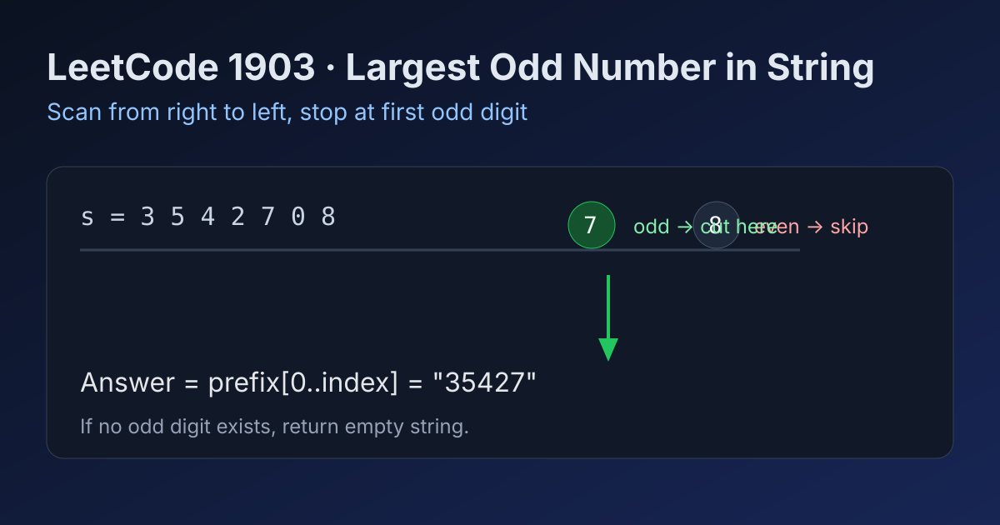

LeetCode 1903: Largest Odd Number in String (Rightmost Odd Suffix Cut)
LeetCode 1903StringGreedyScanToday we solve LeetCode 1903 - Largest Odd Number in String.
Source: https://leetcode.com/problems/largest-odd-number-in-string/

English
Problem Summary
Given a numeric string num, return the largest-valued odd integer that is a non-empty substring prefix of num. If none exists, return an empty string.
Key Insight
Any valid answer must end with an odd digit. To maximize value, we want the longest prefix whose last digit is odd. So scan from right to left and stop at the first odd digit.
Algorithm
1) Start from the last index of num.
2) Move left until finding a digit in {1,3,5,7,9}.
3) Return num.substring(0, i + 1).
4) If no odd digit appears, return "".
Complexity Analysis
Time: O(n).
Space: O(1) extra (excluding output substring storage).
Common Pitfalls
- Misunderstanding substring vs prefix; the optimal answer is always a prefix.
- Checking every substring, causing unnecessary O(n²) work.
- Forgetting that 0 is even and cannot terminate an odd number.
Reference Implementations (Java / Go / C++ / Python / JavaScript)
class Solution {
public String largestOddNumber(String num) {
for (int i = num.length() - 1; i >= 0; i--) {
int d = num.charAt(i) - '0';
if ((d & 1) == 1) {
return num.substring(0, i + 1);
}
}
return "";
}
}func largestOddNumber(num string) string {
for i := len(num) - 1; i >= 0; i-- {
d := int(num[i] - '0')
if d%2 == 1 {
return num[:i+1]
}
}
return ""
}class Solution {
public:
string largestOddNumber(string num) {
for (int i = (int)num.size() - 1; i >= 0; --i) {
int d = num[i] - '0';
if (d % 2 == 1) {
return num.substr(0, i + 1);
}
}
return "";
}
};class Solution:
def largestOddNumber(self, num: str) -> str:
for i in range(len(num) - 1, -1, -1):
if (ord(num[i]) - ord('0')) % 2 == 1:
return num[:i + 1]
return ""var largestOddNumber = function(num) {
for (let i = num.length - 1; i >= 0; i--) {
const d = num.charCodeAt(i) - 48;
if ((d & 1) === 1) {
return num.slice(0, i + 1);
}
}
return "";
};中文
题目概述
给定数字字符串 num，返回其某个非空前缀所形成的最大奇数字符串；如果不存在奇数结果，返回空字符串。
核心思路
奇数必须以奇数位结尾（1/3/5/7/9）。为了让数值最大，应尽可能保留更长前缀，所以从右往左找到第一个奇数字符位置并截取到那里即可。
算法步骤
1）从字符串末尾向左扫描。
2）遇到第一个奇数字符后返回前缀 num[0..i]。
3）若整串都没有奇数字符，则返回 ""。
复杂度分析
时间复杂度：O(n)。
空间复杂度：O(1)（不计返回结果）。
常见陷阱
- 误把题目理解成任意子串，实际上最优答案一定是前缀。
- 枚举所有子串导致不必要的二次复杂度。
- 把 0 当成可作为结尾的奇数位。
多语言参考实现（Java / Go / C++ / Python / JavaScript）
class Solution {
public String largestOddNumber(String num) {
for (int i = num.length() - 1; i >= 0; i--) {
int d = num.charAt(i) - '0';
if ((d & 1) == 1) {
return num.substring(0, i + 1);
}
}
return "";
}
}func largestOddNumber(num string) string {
for i := len(num) - 1; i >= 0; i-- {
d := int(num[i] - '0')
if d%2 == 1 {
return num[:i+1]
}
}
return ""
}class Solution {
public:
string largestOddNumber(string num) {
for (int i = (int)num.size() - 1; i >= 0; --i) {
int d = num[i] - '0';
if (d % 2 == 1) {
return num.substr(0, i + 1);
}
}
return "";
}
};class Solution:
def largestOddNumber(self, num: str) -> str:
for i in range(len(num) - 1, -1, -1):
if (ord(num[i]) - ord('0')) % 2 == 1:
return num[:i + 1]
return ""var largestOddNumber = function(num) {
for (let i = num.length - 1; i >= 0; i--) {
const d = num.charCodeAt(i) - 48;
if ((d & 1) === 1) {
return num.slice(0, i + 1);
}
}
return "";
};
Comments